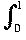
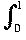

Metric and Topological Spaces
Definition and examples of metric spaces
One measures distance on the line R by:
The distance from a to b is |a - b|.
Some important properties of this idea are abstracted into:
Definition
A metric space is a set X together with a function d (called a metric or "distance function") which assigns a real number d(x, y) to every pair x, y  X satisfying the properties (or axioms):
X satisfying the properties (or axioms):
- d(x, y)
 0 and d(x, y) = 0
0 and d(x, y) = 0  x = y,
x = y,
- d(x, y) = d(y, x),
- d(x, y) + d(y, z) d(x, z).
Remarks
The last property is called the triangle inequality because (when applied to R2 with the usual metric) it says that the sum of two sides of a triangle is at least as big as the third side.
Examples
- The prototype: the line R with its usual distance d(x, y) = |x - y|.
 The plane R2 with the "usual distance" (measured using Pythagoras's theorem):
The plane R2 with the "usual distance" (measured using Pythagoras's theorem):
d((x1 , y1), (x2 , y2)) =  [(x1 - x2)2 + (y1 - y2)2].
[(x1 - x2)2 + (y1 - y2)2].
This is sometimes called the 2-metric d2 .
- The same picture will give metric on the complex numbers C interpreted as the Argand diagram. In this case the formula for the metric is now:
d(z, w) = |z - w|
where the | | in the formula represent the modulus of the complex number rather than the absolute value of a real number.
 The plane with the taxi cab metric d((x1 , y1), (x2 , y2)) = |x1 - x2| + |y1 - y2|.
The plane with the taxi cab metric d((x1 , y1), (x2 , y2)) = |x1 - x2| + |y1 - y2|.
This is often called the 1-metric d1 .
 The plane with the supremum or maximum metric d((x1 , y1), (x2 , y2)) = max(|x1 - x2|, |y1 - y2| ).
The plane with the supremum or maximum metric d((x1 , y1), (x2 , y2)) = max(|x1 - x2|, |y1 - y2| ).
It is often called the infinity metric d .
.
 These last examples turn out to be used a lot. To understand them it helps to look at the unit circles in each metric.
These last examples turn out to be used a lot. To understand them it helps to look at the unit circles in each metric.
That is the sets { x R2 | d(0, x) = 1 }.
We get the following picture:
- Take X to be any set.
The discrete metric on the X is given by : d(x, y) = 0 if x = y and d(x, y) = 1 otherwise.
Then this does define a metric, in which no distinct pair of points are "close".
The fact that every pair is "spread out" is why this metric is called discrete.
- Metrics on spaces of functions
These metrics are important for many of the applications in analysis.
Let C[0, 1] be the set of all continuous R-valued functions on the interval [0, 1].
We define metrics on by analogy with the above examples by:
 d1(f, g) =  |f(x) - g(x)| dx
d1(f, g) =  |f(x) - g(x)| dx
So the distance between functions is the area between their graphs.
- d2(f, g) = [ (f(x) - g(x))2 dx]
Although this does not have such case straight forward geometric interpretation as the last example, this case turns out to be the most important in practice. It corresponds to who doing a "least squares approximation".
 d(f, g) = max {|f(x) - g(x))| | 0
d(f, g) = max {|f(x) - g(x))| | 0  x 1 }
x 1 }
Geometrically, this is the largest distance between the graphs.
Remarks
- The triangle inequality does hold for these metrics
- As in the R2 case one may define dp for any p 1 and get a metric.
Now we can do some analysis in this new environment.
JOC February 2004